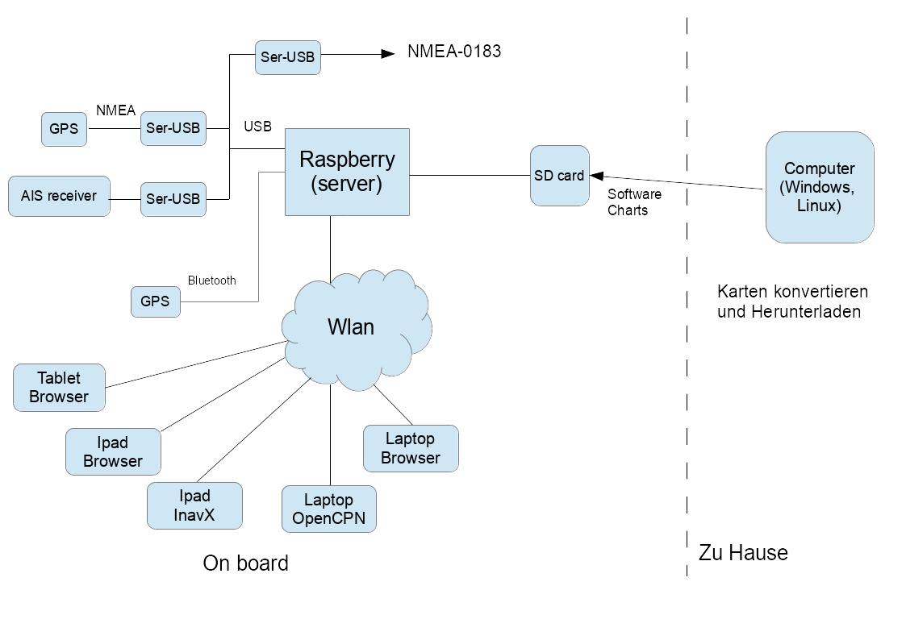
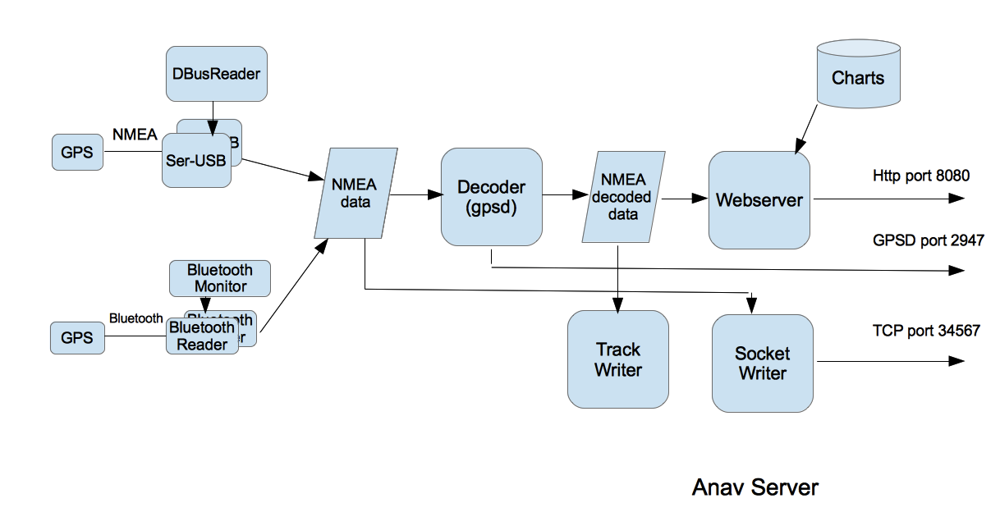

AvNav ist eine kostenlose Navigationssoftware für Sportbootfahrer. Wie andere Anwendungen in diesem Bereich kann man elektronische Seekarten laden und mit angeschlossenen GPS-Geräten schauen, wo sich das eigene Boot befindet. Es ist natürlich möglich, Marker zu setzen, Routen zu erstellen und AIS-Signale einzubinden. Besonderes Merkmal von AvNav ist das Serverkonzept: AvNav lässt sich auf einem Raspberry oder einem Windows-Gerät installieren und als Navigationszentrale betreiben, die alle relevanten Daten einsammelt und Seekarten bereit stellt. Der Zugriff auf den Server im Boots-Netz und damit die eigentliche Darstellung von Karten und Daten läuft auf einem Webbrowser und ist so unabhängig vom jeweiligen Betriebssystem der zugreifenden Geräte. AvNav ist konsequent für die Bedienung per Touchscreen ausgelegt Darüber hinaus bietet AvNav die Möglichkeit, für jedes Gerät, das man benutzen möchte, Layouts zu definieren, um so das Aussehen der App z.B. auf unterschiedliche Bildschirmgrößen anzupassen.
Einmal können Rasterkarten, die nicht herstellerverschlüsselt sind, verwendet werden. Vektorkarten Typs OESenc können ebenfalls genutzt werden. Sie sind allerdings nicht kostenlos und können über den O-Charts-Shop bezogen werden.
Es gibt nicht nur die Server-Variante von AvNav: Ebenfalls zur Verfügung stehen ein „StandAlone-AvNav“ für den Raspberry (AvNav Touch) und eine Android-App. Eine Besonderheit ergibt sich beim Einsatz eines OpenPlotter-Image auf einem Raspberry: Die Installationsvariante „AvNav für Openplotter“ sorgt automatisch für die richtigen Verbindungen zwischen dem Herzstück von Openplotter, dem SignalK-Server und AvNav. Die gesamte Software steht zum Download unter einer Open Source Lizenz bereit.
Für einen schnellen Einstieg: Quickstart
15.12.2020Ein Hinweis vorweg:
Ich kann keine Garantie für die Funktion der App übernehmen, insbesondere die Nutzung zu Navigationszwecken geschieht auf eigenes Risiko. In jedem Falle empfehle ich einen intensiven Test der Genauigkeit der Darstellung und des verwendeten Kartenmaterials.
avnav-raspi-2020
Wie im Bild zu sehen, besteht die gesamte Lösung aus mehreren Teilen:
Raspberry Pi mit einer Server-Software, die die angeschlossenen Geräte abfragt, die Daten aufbereitet und per WLAN zur Verfügung stellt
Software für Windows/OSx/Linux, die zum Vorbereiten und Konvertieren der Karten dient
Über ein WLAN, das der Raspberry Pi als Access Point bereitstellt, können verschiedene Geräte auf die Daten zugreifen. Dabei gibt es mehrere Varianten:
Variante 1: Auf den Geräten (z.B. Ipad oder Laptop) kann eine Navigationssoftware laufen (getestet: InavX,OpenCPN), diese greift über TCP auf die NMEA-Daten zu. Navigationssoftware und Karten müssen natürlich auf den Geräten installiert sein.
Variante 2: Auf den Geräten läuft nur ein Browser, die Navigation erfolgt per Java Script App, die vom Raspberry bereitgestellt wird. Dazu muss nur die entsprechende URL aufgerufen werden. In diesem Fall ist auf den Geräten keine Software installiert, nur ein aktueller Browser muss vorhanden sein (getestet: Chrome unter Windows, OSX, Safari, Android ab 4.x – Chrom/Stock/Boat Browser, IOS, Blackberry stockBrowser, WebBrowser mini).
Die Server Software auf dem Raspberry ist in Python geschrieben und über eine XML-Datei konfigurierbar - was im Normalfall aber nicht notwendig sein sollte. Neben dieser Software steht auch ein fertiges Image für den Raspberry zur Verfügung, das nur noch auf eine SD-Karte installiert werden muss (Empfehlung: mindestens 8GB, mehr ist besser...).
Die Web Applikation bietet eine Navigation mit Rasterkarten (gemf,mbtiles) oder OESenc Vektorkarten inklusive AIS-Darstellung, Wegpunkt-Navigation und Routing. Falls die Web-Applikation verwendet werden soll, müssen die Karten dafür auch auf dem Raspberry installiert werden.
OESenc Karten können im Shop von o-charts erworben werden.
Karten, die die Software nicht direkt verarbeiten kann (siehe Karten), müssen vorher auf dem PC (Windows, Osx, Linux) oder direkt auf dem Raspberry (innerhalb der App) in das gemf Format konvertiert werden. Im Wesentlichen können die folgenden Kartenquellen verarbeitet werden:
Alle Kartentypen, die die GDAL-Software lesen kann (also insbesondere BSB-Karten)
Mit Mobile Atlas Creator heruntergeladene Karten
Daneben gibt es noch eine Android-App, die eine weitgehend identische Funktionalität bereitstellt: Der Server-Anteil ist hier nativ in Java geschrieben, die Anzeige-Funktionen sind identisch zur Raspberry-Variante.
In den folgenden Abschnitten gehe ich auf die Funktion der einzelnen Teile ein wenig genauer ein.
Auf dem Raspberry Pi ist zunächst ein ganz normales Debian Image installiert (ca. 2GB). Dazu kommen einige Zusatzpakete (Liste siehe unten) und meine AvNav-Software.
Der Hauptbestandteil der Sofware auf dem Raspberry Pi ist ein in Python geschriebener Server. Im Folgenden beschreibe ich in groben Zügen, was dieser Server intern tut.

Der Server versucht alle am Raspberry angeschlossenen seriellen Geräte zu
erkennen und deren NMEA-Daten zu lesen. Typisch werden die Geräte über
Seriell-USB Wandler angeschlossen (z.B. PL2303). Man muss ein wenig
aufpassen, dass man einen Wandler hat, der vom Raspberry auch sauber
unterstützt wird - siehe z.B. hier.
Da das Verwalten der seriellen Schnittstellen unter Linux etwas magisch
ist, scannt der Server die angeschlossenen Geräte auf eine entsprechende
serielle Klasse und ermittelt deren Schnittstelle (device). Anschliessend
versucht er ein "auto bauding" zwischen 4800 und 34000 Baud und bemüht
sich, NMEA Daten zu erkennen. Falls keine Daten empfangen werden, wird die
Schnittstelle geschlossen und das Spiel beginnt von vorn. Damit „überlebt“
der Server auch das Anschliessen/Abstecken von Wandlern während des
Betriebes oder das An- bzw. Abschalten von Geräten. Bei mir hängt ein
RO4800 mit AIS-Decoder an einem Seriell-USB-Wandler, die GPS Daten werden
durchgereicht. Alternativ versucht AvNav auch Kontakt zu seriellen
Bluetooth-Geräten aufzunehmen. Falls die App per "discovery" Geräte
findet, versucht sie von diesen ebenfalls NMEA-Daten zu lesen. Das wurde
z.B. mit einer Holux GPS Slim236 getestet. In diesem Sinne arbeitet der
AvNav-Server auch als NMEA-Multiplexer.
Alle GPS-Daten werden intern in eine Liste eingefügt und per TCP bereitgestellt. Verbundene TCP-Empfänger (z.B. OpenCPN) bekommen so jeden empfangenen Datensatz weitergereicht. Per Default "lauscht" der Server (intern:SocketWriter) auf Port 34567.
Daneben lassen sich Daten auch per TCP, UDP oder direkt über die seriellen Schnittstellen des Raspberry lesen und schreiben.
Anschliessend werden die NMEA Daten an den Decoder weitergereicht. Die dekodierten GPS- und AIS-Daten werden im Server abgelegt ("NMEA decoded data") und für den Zugriff per HTTP aus der WebApp bereitgestellt. Zusätzlich werden die dekodierten Daten auch benutzt, um Trackdateien zu schreiben.
Über den integrierten WebServer kann der Zugriff auf diese dekodierten Daten erfolgen (per HTTP GET, Antwort als json).
Der Route-Handler wertet eingestellte Routen (bzw. Wegpunkte) aus und berechnet daraus die Daten für eine Autopilot-Steuerung. Diese werden als RMB NMEA Datensätze wieder in die internen NMEA Daten eingespeist und stehen so an allen Schnittstellen zur Verfügung.
Falls gültige GPS Zeitinformationen empfangen werden, wird die Systemzeit des Raspberry entsprechend eingestellt.Auf dem Raspberry gibt es noch einen Service, der den AvNav-Server beim Systemstart automatisch startet und es auch ermöglicht, ihn geordnet zu beenden.
Da der gesamte Server in Python geschrieben ist, kann er auch (vor allem zu Testzwecken) unter Windows, Osx (Mac) oder Linux laufen. Dazu muss Python ab 3.7 installiert sein (die Windows Installation bringt das selbst mit). Falls reale serielle Daten gelesen werden sollen, muss dazu noch pyserial installiert werden.
Der Server kann in weiten Grenzen durch eine XML-Datei konfiguriert werden, für die verschiedenen Nutzungsfälle liegen dokumentierte Beispiele vor. In den Versionen ab 20210322 können die meisten Einstellungen auch direkt in der App vorgenommen werden.
Die ausgelieferte avnav_server.xml Datei enthält Kommentare, so dass Anpassungen an die eigenen Bedürfnisse einfach möglich sein sollten.Die Software ist auf github verfügbar - für die Installation sei die separate Beschreibung verwiesen..
Auf dem Raspberry ist die Software in der folgenden Verzeichnisstruktur installiert:
|
Verzeichnis |
Inhalt |
|---|---|
| /usr/lib/avnav | die Software nach der Installation |
|
/home/pi/avnav/data/ |
Basis für die Nutzer-Daten |
|
.../data/charts |
Verzeichnis für die Kartendateien -siehe Karten konvertieren. |
|
.../data/log |
logfiles |
|
.../data/tracks |
Die trackfiles (gpx). Sie werden in einem File pro Tag gespeichert, ausserdem werden Nmea-Logs aufgezeichnet. |
| .../data/routes | Routen - xxx.gpx und das aktuelle Segment (Leg) currentLeg.json |
| .../data/import | Hier abgelegte Karten werden konvertiert in das "gemf"-Format, sodass die WebApp sie verarbeiten kann |
Bis auf die "systemd"-Scripte läuft die gesamte Software unter dem Nutzer pi (auf dem Raspberry) oder als beliebiger anderer Nutzer ("avnav" als default). Die Installation muss allerdings als "root" erfolgen.
Die App kommuniziert mit dem in AvNav integrierten Webserver auf dem Pi. Die Einstiegsseite ist unter der url http://avnav.avnav.de/viewer/avnav_viewer.html erreichbar. Es ist eine sogenannte „single page app“, d.h. die weitere Kommunikation mit dem Server geschieht per Ajax durch den JavaScript-Anteil. Das Layout ist optimiert für die Darstellung auf einem 7 Zoll-Tablet oder größer, bei mir momentan im Einsatz: Nexus 7 am Navitisch, Blackberry Playbook draussen, sie läuft aber natürlich auch auf größeren Tablets (Ipad) oder auf einem Laptop/Desktop. Eine sinnvolle Nutzung ist ab etwa 900x540 Pixel möglich.
Die WebApp unterstützt eine Reihe von URL Parametern mit denen man einige Funktionen steuern kann.
| Parameter | Beschreibung | |
| defaultLayout | Der Name eines existierenden Layouts das als initiales Layout genutzt wird. | |
| defaultSettings | Der Name einer existierenden Einstellungsdatei (regex möglich).
Diese wird genutzt als default, wenn AvNav das erste Mal in diesem
Browser für diese URL startet. Beispiel: defaultSettings=.*localFirefox |
|
| fullscreen | Man kann einen Parameter in der Form "server:<command>"
angeben. Command muss ein existierendes Kommando sein, das
beim AVNCommandHandler
konfiguriert wurde. Das wird ausgeführt, wenn der Fullscreen Button
geklickt wird (anstelle der Fullscreen Funktion im Browser). Beispiel: fullscreen=server:fullCommand |
|
| dimm | Man kann einen Parameter in der Form "server:<command>"
angeben. Command muss ein existierendes Kommando sein, das
beim AVNCommandHandler
konfiguriert wurde. Das wird ausgeführt, wenn der Dimm Button
geklickt wird (anstelle der Nutzung einer Dimm Funktion in Java
Script - wie bei AvNav auf Android) Beispiel: dimm=server:dimmCommand |
|
| noCloseDialog | Kein Dialog der warnt, wenn die AvNav Seite verlassen werden soll. Beispiel: noCloseDialog=true |
|
| splitMode | Starte AvNav im Split Mode. Beispiel: splitMode=yes |
|
| preventAlarms | Zeige keine Alarme. Beispiel: preventAlarms=true |